1 barenn
1/52｜2026/08/10
5JK33
多了哪些牌
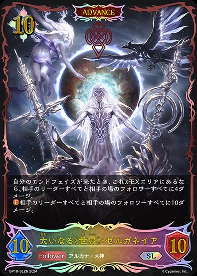
+1+1+1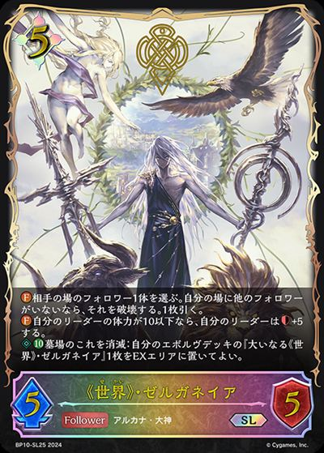
+1+1少了哪些牌
 -2
-2 -2-1
-2-1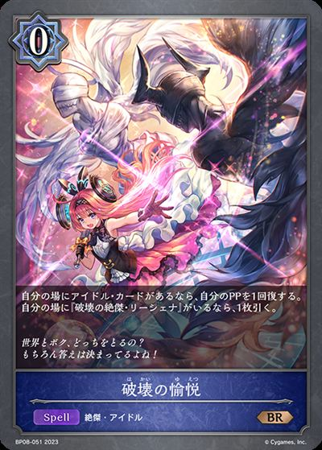
主BP08-051/BP08-P12：破壊の愉悦主卡组 × 3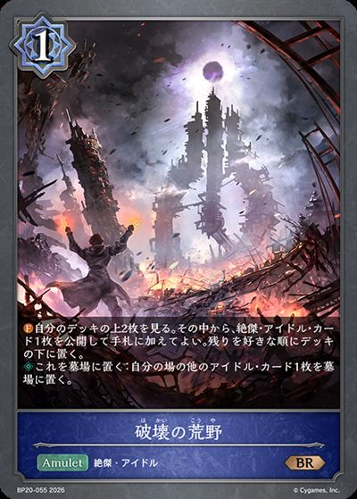
主BP20-055/BP20-P29：破坏的荒野主卡组 × 3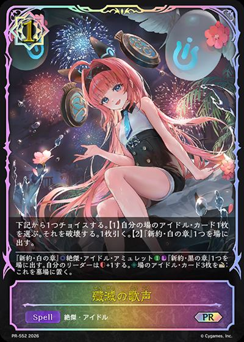
主BP20-045/PR-552：歼灭的歌声主卡组 × 3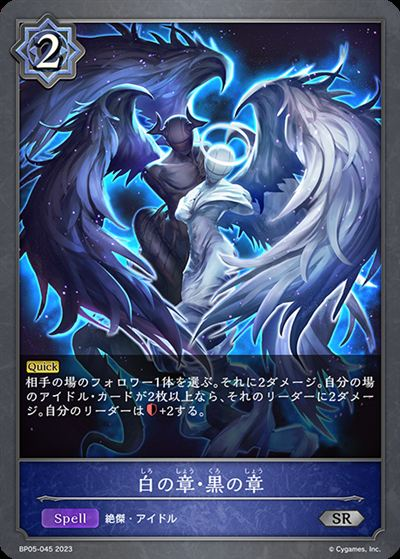
主BP05-045/BP05-P19：白の章・黒の章主卡组 × 3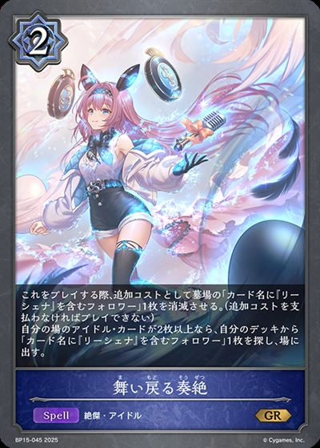
主BP15-045/BP15-P09：舞い戻る奏絶主卡组 × 3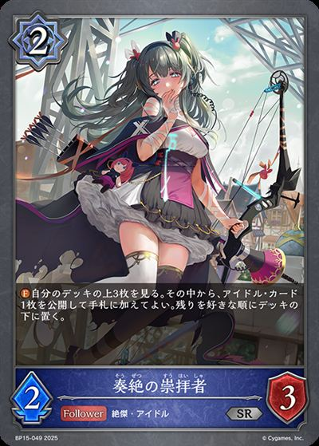
主BP15-049：奏絶の崇拝者主卡组 × 2主BP15-113/BP15-SL29/BP15-SP02：干绝的饥饿·吉尔内里泽主卡组 × 2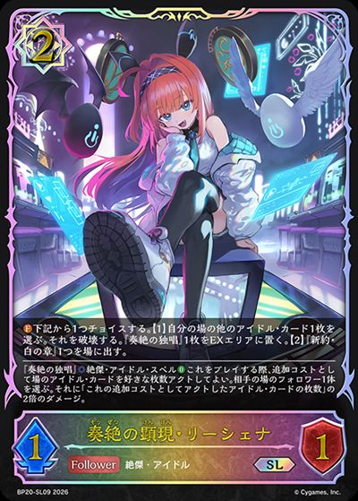
主BP20-037/BP20-SL09：奏绝的显现·里榭娜主卡组 × 3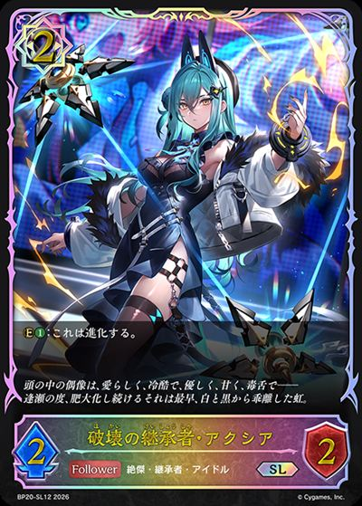
主BP20-040/BP20-SL12：破坏的继承者·阿克西雅主卡组 × 3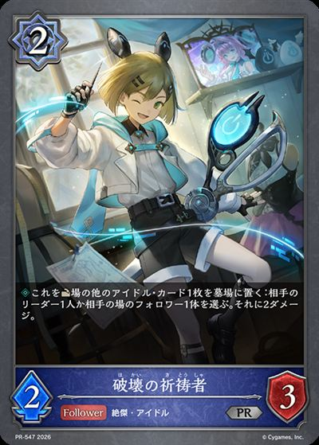
主BP20-048/PR-547：破坏的祈祷者主卡组 × 3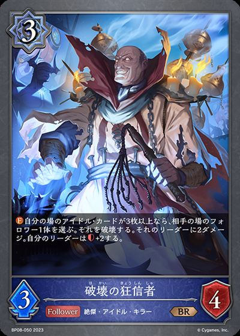
主BP08-050：破壊の狂信者主卡组 × 3进BP15-114/BP15-SL30/BP15-U07/SCS01-009：干绝的饥饿·吉尔内里泽进化 × 2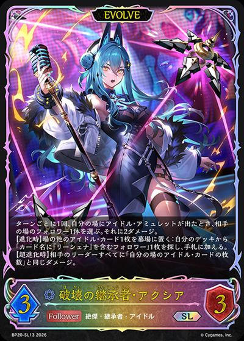
进BP20-041/BP20-SL13/BP20-U04：破坏的继承者·阿克西雅进化 × 3
+1+1+1
+1+1-2-2-1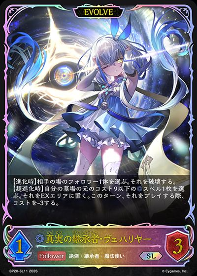
+1+1+1+1-2-2-1-2-2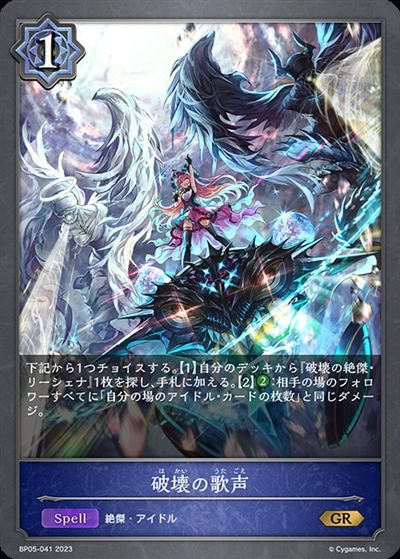
+2+1+1-2-2-1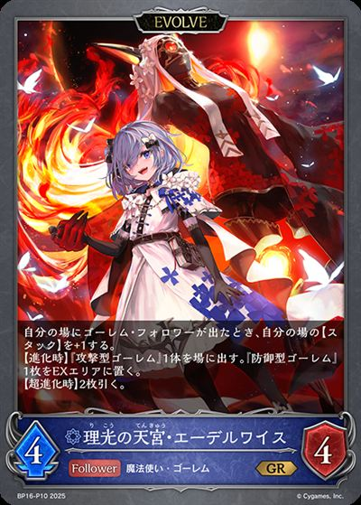
+1+1+1+1+1-2-2-1-1-1-1-2-2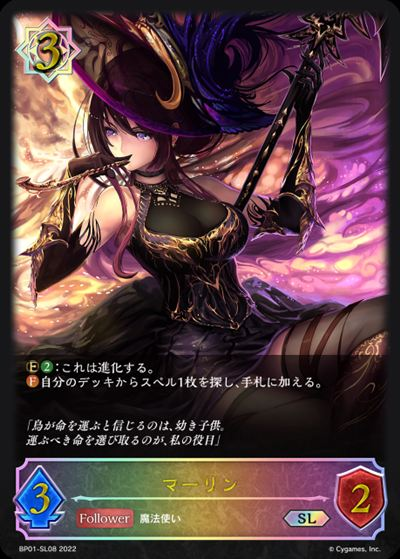
+2+2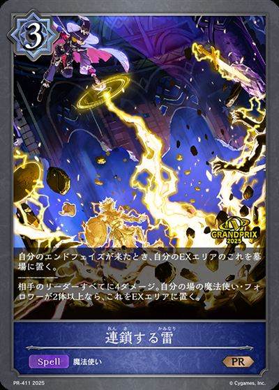
+1-2-2-2-2+1+1+1+1-1-1-1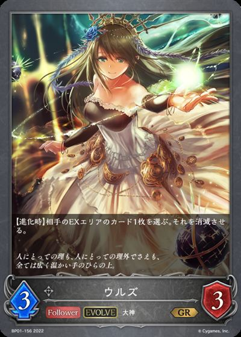
+1+1+1+1-1-1-1-1-1-1-2-2-1-2-2-1-2-2-1-2-2-1-2-2-1-1-1-1-2-2-2-2-2-2-1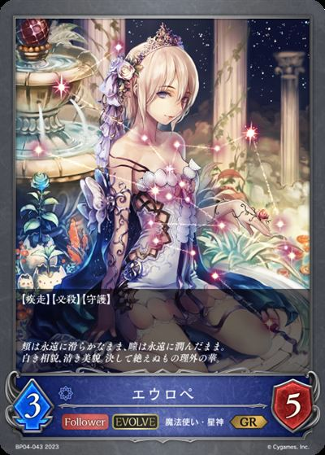
+1+1+1+1-2-2-2-2-2-2-2+1+1+1 +1-1-1-2-2-1-1-2-2-1-1-2-2-2-2-2-2
+1-1-1-2-2-1-1-2-2-1-1-2-2-2-2-2-2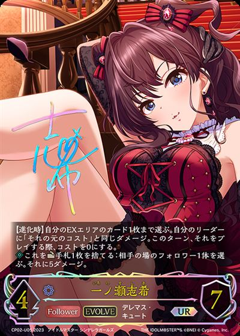
+1+1+1-2-2-2-2-2-1-2-2-2-2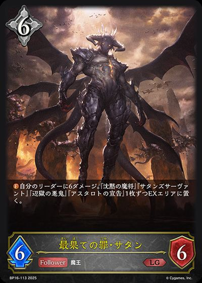
+1-2-2-2-2-1-1-2-2-1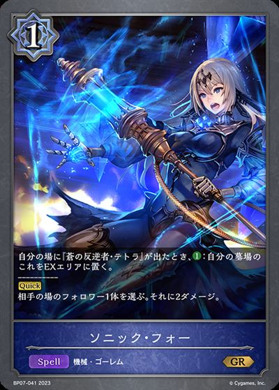
+3+1+1-2-2-1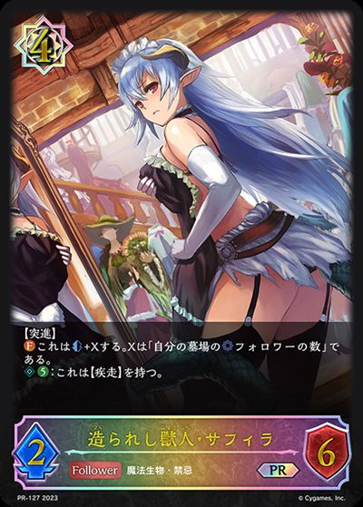
+1 +1+1+1-2-2-2-2-1-1-2-2-2-2-2-2-2-2-1-2-2-2-2-1-2-2-2-2-2-2-2-1
+1+1+1-2-2-2-2-1-1-2-2-2-2-2-2-2-2-1-2-2-2-2-1-2-2-2-2-2-2-2-1 +1+1+1-2-2-2-2-1-2-2-1-1+1-2-1
+1+1+1-2-2-2-2-1-2-2-1-1+1-2-1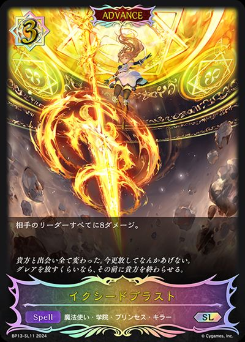
+1+1+1+1-2-2-1-2-2-1-1-2-2-1-1-2-2-1-1-1-2-2-1-1-1-2-2-1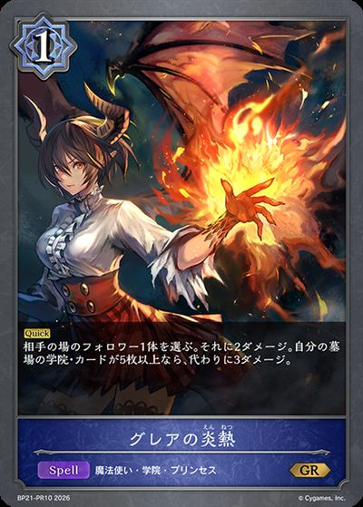
+2-2-2-2-1| 图片 | 平均张数 | 使用率 | 携带最好成绩 | 不携带最好成绩 | 1张比例 | 2张比例 | 3张比例 |
|---|---|---|---|---|---|---|---|
| 3.00 | 100.0% | 2 2/2981R5WQC |
无 | 0.0% | 0.0% | 100.0% | |
| 3.00 | 100.0% | 2 2/2981R5WQC |
无 | 0.0% | 0.0% | 100.0% | |
| 3.00 | 100.0% | 2 2/2981R5WQC |
无 | 0.0% | 0.0% | 100.0% | |
| 3.00 | 100.0% | 2 2/2981R5WQC |
无 | 0.0% | 0.0% | 100.0% | |
| 3.00 | 100.0% | 2 2/2981R5WQC |
无 | 0.0% | 0.0% | 100.0% | |
| 3.00 | 100.0% | 2 2/2981R5WQC |
无 | 0.0% | 0.0% | 100.0% | |
| 3.00 | 100.0% | 2 2/2981R5WQC |
无 | 0.0% | 0.0% | 100.0% | |
| 2.99 | 100.0% | 2 2/2981R5WQC |
无 | 0.0% | 1.4% | 98.6% | |
| 2.94 | 100.0% | 2 2/2981R5WQC |
无 | 0.7% | 4.2% | 95.1% | |
| 2.63 | 100.0% | 2 2/2981R5WQC |
无 | 0.7% | 35.2% | 64.1% | |
| 1.41 | 99.3% | 2 2/2981R5WQC |
8 8/155SWTR |
57.7% | 41.5% | 0.0% | |
| 2.27 | 97.9% | 2 2/2981R5WQC |
1 1/124XA4D |
4.2% | 57.7% | 35.9% | |
| 2.82 | 97.2% | 2 2/2981R5WQC |
2 2/311QM9TE |
0.0% | 9.2% | 88.0% | |
| 2.08 | 95.1% | 2 2/2981R5WQC |
1 1/164QYL3 |
13.4% | 50.0% | 31.7% | |
|
1.19 | 61.3% | 2 2/2981R5WQC |
1 1/525JK33 |
6.3% | 52.1% | 2.8% |
| 0.29 | 22.5% | 1 1/31ZG508 |
2 2/2981R5WQC |
16.9% | 4.9% | 0.7% | |
| 0.09 | 5.6% | 2 2/311QM9TE |
2 2/2981R5WQC |
2.1% | 3.5% | 0.0% | |
| 0.09 | 5.6% | 7 7/29810ZH1E |
2 2/2981R5WQC |
2.8% | 2.1% | 0.7% | |
| 0.06 | 5.6% | 2 2/311QM9TE |
2 2/2981R5WQC |
5.6% | 0.0% | 0.0% | |
| 0.06 | 4.2% | 1 1/303RKY7 |
2 2/2981R5WQC |
2.8% | 1.4% | 0.0% | |
| 0.04 | 4.2% | 5 5/174W5CT |
2 2/2981R5WQC |
4.2% | 0.0% | 0.0% | |
| 0.04 | 3.5% | 1 1/525JK33 |
2 2/2981R5WQC |
3.5% | 0.0% | 0.0% | |
| 0.02 | 0.7% | 4 4/14412HD |
2 2/2981R5WQC |
0.0% | 0.0% | 0.7% | |
| 0.01 | 0.7% | 8 8/121CUXR |
2 2/2981R5WQC |
0.0% | 0.7% | 0.0% | |
| 0.01 | 0.7% | 3 3/114F72K |
2 2/2981R5WQC |
0.7% | 0.0% | 0.0% | |
|
0.01 | 0.7% | 4 4/27DEWCY |
2 2/2981R5WQC |
0.7% | 0.0% | 0.0% |
| 图片 | 平均张数 | 使用率 | 携带最好成绩 | 不携带最好成绩 | 1张比例 | 2张比例 | 3张比例 |
|---|---|---|---|---|---|---|---|
| 3.00 | 100.0% | 2 2/2981R5WQC |
无 | 0.0% | 0.0% | 100.0% | |
| 2.96 | 100.0% | 2 2/2981R5WQC |
无 | 0.0% | 4.2% | 95.8% | |
| 2.39 | 98.6% | 2 2/2981R5WQC |
1 1/124XA4D |
0.0% | 56.3% | 42.3% | |
|
1.20 | 62.7% | 2 2/2981R5WQC |
1 1/525JK33 |
7.7% | 52.8% | 2.1% |
| 0.20 | 19.0% | 1 1/525JK33 |
2 2/2981R5WQC |
17.6% | 1.4% | 0.0% | |
| 0.10 | 7.0% | 2 2/311QM9TE |
2 2/2981R5WQC |
4.2% | 2.8% | 0.0% | |
| 0.04 | 4.2% | 1 1/525JK33 |
2 2/2981R5WQC |
4.2% | 0.0% | 0.0% | |
| 0.01 | 1.4% | 1 1/124XA4D |
2 2/2981R5WQC |
1.4% | 0.0% | 0.0% | |
| 0.01 | 1.4% | 2 2/154VERF |
2 2/2981R5WQC |
1.4% | 0.0% | 0.0% | |
| 0.01 | 1.4% | 7 7/29810ZH1E |
2 2/2981R5WQC |
1.4% | 0.0% | 0.0% | |
| 0.01 | 0.7% | 7 7/122FZA5 |
2 2/2981R5WQC |
0.7% | 0.0% | 0.0% | |
|
0.01 | 0.7% | 6 6/2049CS9 |
2 2/2981R5WQC |
0.7% | 0.0% | 0.0% |
| 0.01 | 0.7% | 7 7/15MJH2C |
2 2/2981R5WQC |
0.7% | 0.0% | 0.0% | |
| 0.01 | 0.7% | 3 3/155B35B |
2 2/2981R5WQC |
0.7% | 0.0% | 0.0% | |
| 0.01 | 0.7% | 1 1/303RKY7 |
2 2/2981R5WQC |
0.7% | 0.0% | 0.0% | |
| 0.01 | 0.7% | 3 3/131707Z |
2 2/2981R5WQC |
0.7% | 0.0% | 0.0% | |
|
0.01 | 0.7% | 6 6/151XCURE |
2 2/2981R5WQC |
0.7% | 0.0% | 0.0% |